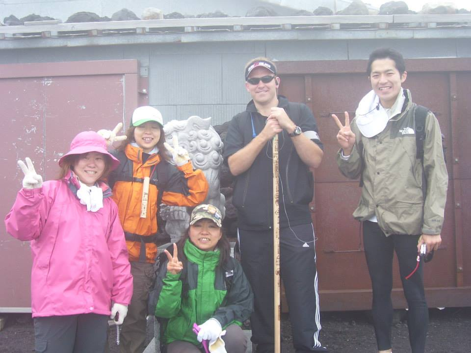
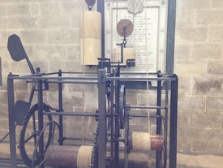
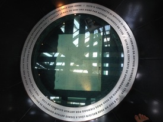
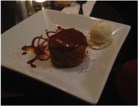

About

I spent nine years in the Navy as a sonar technician, travelling the world. I have been fortunate enough to be put into extraordinary circumstances in my life, and silly enough not to have run away.
Some of my favorite memories are climbing Mt. Fuji in Japan, eating haggis in Scotland, fending off tuk-tuk drivers in Cambodia, and seeing wonders of engineering like the Panama Canal.
After the Navy I studied electrical engineering at San Diego State University and UC San Diego, and have worked in machine learning ever since. My resume has the details.
Where I have been
Memorable experiences


